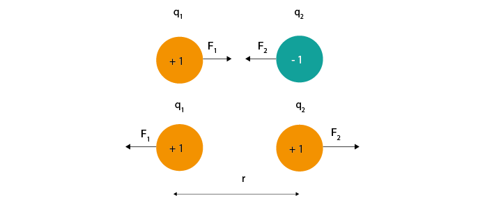
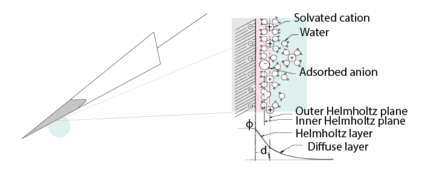

Teori Hari 1#
Pendahuluan#
Selamat datang di Open Ephys Cajal Course tentang akuisisi elektrofisiologi ekstraseluler.
Tujuan utama dari elektrofisiologi (ephys) adalah merekam sinyal yang dihasilkan oleh sel biologis yang aktif secara listrik. Meskipun terdapat banyak sistem akuisisi dan pengaturan eksperimen yang berbeda, semuanya dibangun berdasarkan prinsip-prinsip dasar yang sama.
Dengan memahami konsep-konsep inti ini, Anda akan mampu melihat melampaui merek dan tradisi, serta membuat keputusan yang tepat tentang apa yang sebenarnya perlu dicapai oleh sistem akuisisi Anda.
Talk: Pendahuluan#
Jenis-Jenis Elektrofisiologi Ekstraseluler#
Beberapa proses biologis menghasilkan sinyal listrik yang berubah terhadap waktu dan dapat diukur dari luar sel, antara lain:
Kontraksi otot rangka (EMG)
Aktivitas jantung (ECG)
Aktivitas otak (EEG, LFP, dan rekaman spike)
Dalam neurosains sistem, elektroda intrakranial umum digunakan untuk mengukur potensial aksi (spike) dan potensial medan lokal (LFP). Elektroda permukaan non-invasif yang ditempatkan di kulit kepala memungkinkan pengukuran sinyal EEG.
Kursus ini terutama berfokus pada rekaman ekstraseluler intrakranial, karena metode ini banyak digunakan dalam penelitian neurosains. Namun, untuk latihan praktik, digunakan rangkaian perekaman EMG karena aman dan mudah diuji.
Teknik |
Sumber Sinyal |
Jenis Elektroda |
Amplitudo Tipikal |
|---|---|---|---|
ECG / EKG |
Depolarisasi & repolarisasi jantung |
Elektroda permukaan |
Rentang mV |
EMG |
Aktivitas unit motorik otot rangka |
Elektroda permukaan pada otot |
Rentang mV |
EEG |
Aktivitas saraf gabungan |
Elektroda kulit kepala |
~50 µV |
LFP |
Aktivitas populasi neuron lokal |
Elektroda intrakranial |
100–1000 µV |
Rekaman spike |
Potensial aksi dari neuron tunggal |
Tetrode, kawat tunggal, probe silikon |
20–200 µV |
Penyegaran Elektronika#
Partikel Bermuatan dan Gaya Listrik#
Sinyal listrik dalam jaringan biologis berasal dari ion bermuatan seperti Na+, K+, Ca2+, dan Cl-. Sebaliknya, elektron merupakan pembawa muatan utama dalam elektroda dan kabel logam.
Semua partikel bermuatan saling memberikan gaya. Hukum Coulomb menjelaskan bagaimana besar gaya ini bergantung pada muatan dan jarak.
Persamaan 1: Gaya listrik antara dua muatan.

Gambar 1: Gaya listrik bergantung pada besar muatan dan jarak.#
Medan listrik menggambarkan bagaimana muatan memengaruhi lingkungannya. Jika sebuah muatan bebas bergerak dalam medan listrik, maka muatan tersebut akan mengalami gaya dan bergerak sesuai arahnya.
Arus adalah Muatan yang Bergerak#
Arus (I) didefinisikan sebagai aliran muatan terhadap waktu.
Persamaan 2: Definisi arus listrik.
Secara konvensi, arah arus mengikuti pergerakan muatan positif, meskipun pembawa muatan sebenarnya bisa berupa ion negatif.
Perbedaan Potensial Listrik#
Potensial listrik merepresentasikan energi listrik tersimpan per satuan muatan. Perbedaan potensial listrik antara dua titik mendorong terjadinya aliran arus.
Tegangan selalu diukur antara dua titik. Dalam rekaman ekstraseluler, hal ini biasanya berarti mengukur perbedaan potensial antara ujung elektroda dan referensi atau ground.
Hambatan#
Hambatan (R) menentang aliran arus dan dijelaskan oleh Hukum Ohm:
Persamaan 3: Hukum Ohm.
Kapasitansi#
Sebuah kapasitor terdiri dari dua konduktor yang dipisahkan oleh isolator. Kapasitor menyimpan muatan sesuai dengan:
Persamaan 4: Muatan yang disimpan oleh kapasitor.
Kapasitor memungkinkan aliran arus sesaat selama proses pengisian dan pengosongan, meskipun tidak ada muatan yang melewati lapisan isolator.
Impedansi#
Sinyal neuron merupakan sinyal bolak-balik, artinya arah arus berubah seiring waktu. Untuk sinyal seperti ini, impedansi (Z) menggambarkan hambatan terhadap aliran arus dan bergantung pada frekuensi.
Untuk kapasitor:
Persamaan 5: Impedansi kapasitif menurun seiring peningkatan frekuensi.
Rangkaian Ekuivalen di Otak#
Neuron dapat dimodelkan menggunakan rangkaian listrik ekuivalen. Kanal ion bertindak sebagai hambatan variabel, sementara membran sel berperilaku seperti kapasitor. Potensial membran merepresentasikan perbedaan potensial listrik pada kapasitor ini.
Potensial Aksi#
Potensial aksi terjadi ketika kanal Na+ berpintu tegangan terbuka, memungkinkan masuknya ion Na+ secara cepat. Depolarisasi ini diikuti oleh keluarnya ion K+, yang mengembalikan membran mendekati potensial istirahat.
Potensial Pascasinaptik#
Sinyal LFP dan EEG terutama berasal dari penjumlahan potensial pascasinaptik, yang terjadi dalam skala waktu lebih lama dibandingkan potensial aksi sehingga dapat terakumulasi dengan lebih efektif.
Pengukuran Ekstraseluler#
Elektroda ekstraseluler mengukur potensial listrik Vec yang diinduksi oleh arus transmembran. Amplitudo dan bentuk sinyal bergantung pada besar arus, jarak, dan konduktivitas jaringan.
Apa yang Dilakukan Sistem Akuisisi?#
Sistem akuisisi ekstraseluler harus mampu:
Mendeteksi perubahan kecil potensial listrik
Menjaga fidelitas sinyal pada berbagai frekuensi
Meminimalkan noise lingkungan
Mentransfer sinyal secara akurat dari elektroda ke keluaran
Tujuannya adalah memastikan bahwa Vout sangat mendekati sinyal ekstraseluler asli Vec.
Antarmuka Elektroda–Jaringan#
Pada antarmuka elektroda–elektrolit, perpindahan muatan terjadi melalui lapisan ganda listrik, yang berperilaku sebagai hambatan Re dan kapasitansi Ce yang tersusun paralel.

Gambar 7: Antarmuka lapisan ganda listrik.#
Elektroda Non-terpolarisasi dan Terpolarisasi#
Elektroda non-terpolarisasi (misalnya Ag–AgCl) memungkinkan perpindahan muatan secara langsung.
Elektroda terpolarisasi (misalnya tungsten) bergantung pada kopling kapasitif.
Setiap jenis elektroda memiliki karakteristik impedansi dan kesesuaian yang berbeda untuk aplikasi perekaman tertentu.
Referensi#
Bard, A. J., & Faulkner, L. R. (2001). Electrochemical methods Fundamentals and Applications. Molecular Biology (Second, Vol. 8). John Wiley & Sons, Inc.
Buzsaki, G., Anastassiou, C.A., and Koch, C. (2012). The origin of extracellular fields and currents - EEG, ECoG, LFP and spikes. Nat Rev Neurosci 13, 407–420.
Defelipe, J., Alonso-Nanclares, L., and Arellano, J. (2002). Microstructure of the neocortex: Comparative aspects. Journal of Neurocytology 31, 299–316.
Einevoll, G.T., Kayser, C., Logothetis, N.K., and Panzeri, S. (2013). Modelling and analysis of local field potentials for studying the function of cortical circuits. Nature Reviews Neuroscience 14, 770–785.
Gold, C., Henze, D.A., Koch, C., and Buzsáki, G. (2006). On the Origin of the Extracellular Action Potential Waveform: A Modeling Study. Journal of Neurophysiology 95, 3113–3128.
Herculano-Houzel, S. (2009). The human brain in numbers: a linearly scaled-up primate brain. Front. Hum. Neurosci. 3.
Hodgkin, A.L., and Huxley, A.F. (1939). Action Potentials Recorded from Inside a Nerve Fibre. Nature 144, 710–711.
Kandel, E.R., Schwartz, J.H., and Jessel, T.M. (1991). Principles of neural science.
Markram, H., Muller, E., Ramaswamy, S., Reimann, M.W., Abdellah, M., Sanchez, C.A., Ailamaki, A., Alonso-Nanclares, L., Antille, N., Arsever, S., et al. (2015). Reconstruction and Simulation of Neocortical Microcircuitry. Cell 163, 456–492.
Merrill, D.R., Bikson, M., and Jefferys, J.G.R. (2005). Electrical stimulation of excitable tissue: design of efficacious and safe protocols. Journal of Neuroscience Methods 141, 171–198.
Meyer, A.C., and Moser, T. (2010). Structure and function of cochlear afferent innervation. Curr Opin Otolaryngol Head Neck Surg 18, 441–446.
Musa, R. (2011). Design, fabrication and characterization of a neural probe for deep brain stimulation and recording.
Musa, S., Rand, D.R., Cott, D.J., Loo, J., Bartic, C., Eberle, W., Nuttin, B., and Borghs, G. (2012). Bottom-Up SiO2 Embedded Carbon Nanotube Electrodes with Superior Performance for Integration in Implantable Neural Microsystems. ACS Nano 6, 4615–4628.
Nelson, M.J., Bosch, C., Venance, L., and Pouget, P. (2013). Microscale Inhomogeneity of Brain Tissue Distorts Electrical Signal Propagation. J. Neurosci. 33, 2821–2827.
Nunez, P.L., and Srinivasan, R. (2006). Electric fields of the brain: the neurophysics of EEG (Oxford ; New York: Oxford University Press).
Obien, M.E.J., Deligkaris, K., Bullmann, T., Bakkum, D.J., and Frey, U. (2015). Revealing neuronal function through microelectrode array recordings. Front. Neurosci. 8.
Ray Cooper. (1971). Recording Changes in Electrical Properties in the Brain in Methods of Psychobiology. (R. D. Myers, Ed.) (Volume 1). London and New York: Academic Press.
Wright, S. (2004). Generation of resting membrane potential. Adv Physiol Educ. 28: 139-142.